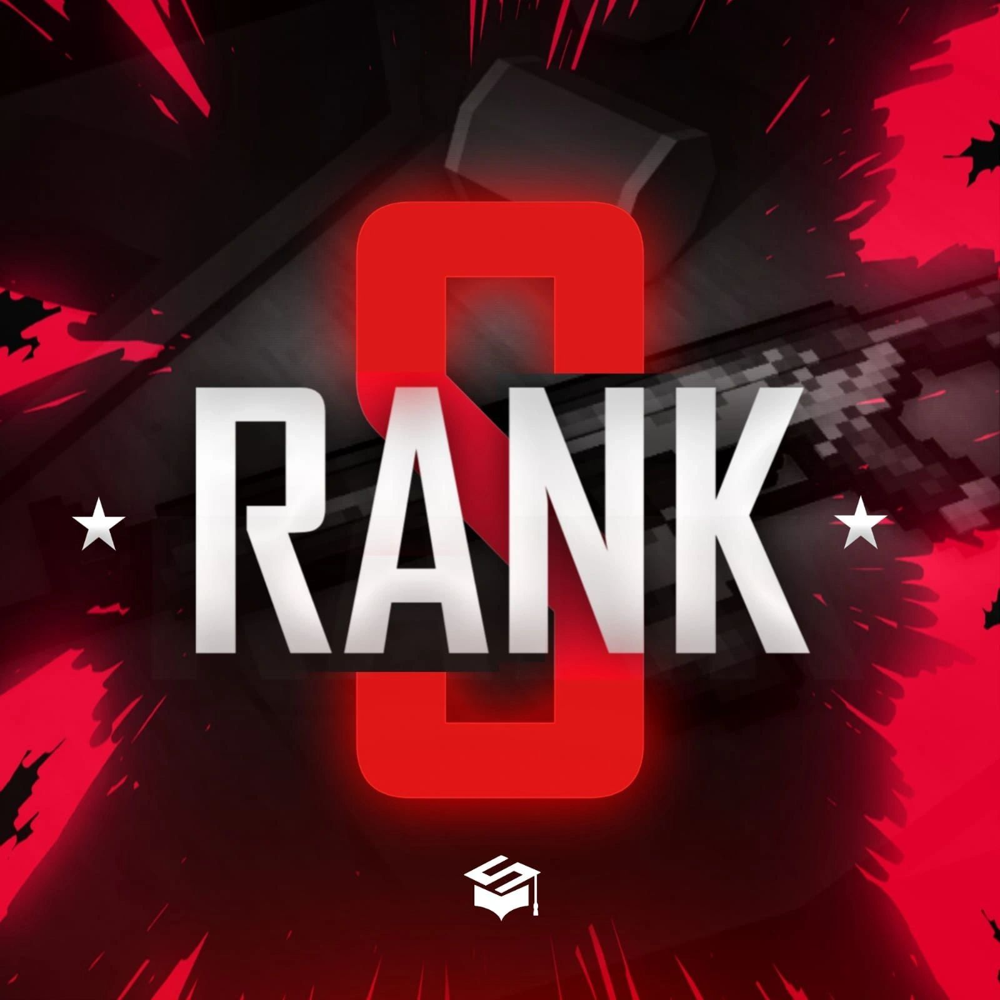

ESPECIAL · MAJOR HISTORYMais que títulos.
Mais que títulos.
Um legado.
Relembre os campeões que escreveram
a história do Block Strike competitivo.

EST. 2017O JOGO MUDA. A HISTÓRIA PERMANECE.01 / 03
2017INÍCIO DO ACERVO
GSE / TSLCIRCUITOS HISTÓRICOS
2025ÚLTIMA TEMPORADA NO ACERVO
Arquivo de campeonatos
Registros do acervo original. Sem placares ou datas exatas presumidos.
Major History · Todos os campeões
8 EDIÇÕESCada edição, cada campeão. Explore o histórico completo dos Majors de Block Strike.
2023
2 EDIÇÕES2021
2 EDIÇÕES2020
1 EDIÇÃO2019
1 EDIÇÃO2018
2 EDIÇÕESHall of Fame
Acervo completo ↗A HISTÓRIA CONTINUA COM VOCÊ
Junte-se ao Discord ↗Você também faz parte disso.
Reencontre a comunidade e compartilhe suas memórias do competitivo.